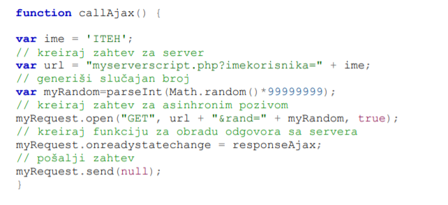

Skoro svi browser-i održavaju takozvani keš posećenih stranica – lokalnu kopiju sadržaja stranice skladištene na hard disku browser-ovog kompjutera. Kada se zahteva ta stranica, browser prvo pokušava da je pročita iz njenog keša, a tek kasnije šalje novi HTTP zahtev.
Ovo je posebno značajan problem sa Inernet Explorer- om. Iako, pomenuto keširanje može izgledati kao prednost u kontekstu brzine učitavanja stranica, kod pisanja AJAX aplikacija nastaje poteškoća. AJAX kontaktira sa serverom, ne čita podatke iz keša. Kada se kreira asinhroni zahtev ka serveru, svaki put mora biti formiran nov HTTP zahtev.
U slučaju GET metode, u zahtevu se na kraju dodaje još jedan parametar. Ako jedan deo URL zahteva svaki put generiše drugu vrednost, to “zavara” browser, tako da svaki put šalje HTTP zahtev na drugu adresu, a ne poziva keširanu stranicu. Koristi se Math objekat i njegova funkcija random(). Kod PUT metode ovaj problem ne postoji.
